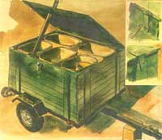

The shed is secured with a boltsnap (top insert) and a padlock hasp that flips out of the way when open. The cleats (bottom insert) are tapered to encourage water runoff. An outside-mounted hinge allows the lid to open completely.